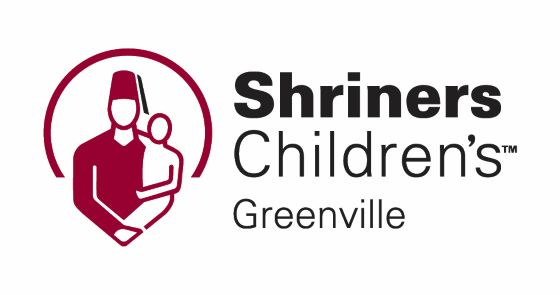
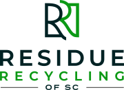

/25
Thank you to our Tri My Best sponsors:


Tri My Best is a swim/bike/run event for youth (4 through 18) with developmental disabilities including Autism, Cerebral Palsy, Muscular Dystrophy, global delays, etc. ALL abilities are welcomed, including those that may require the use of flotation devices, adapted bikes, walkers, power wheelchairs, and other assistive devices. All athletes are paired with volunteers to encourage, assist, and ensure safety.
/25